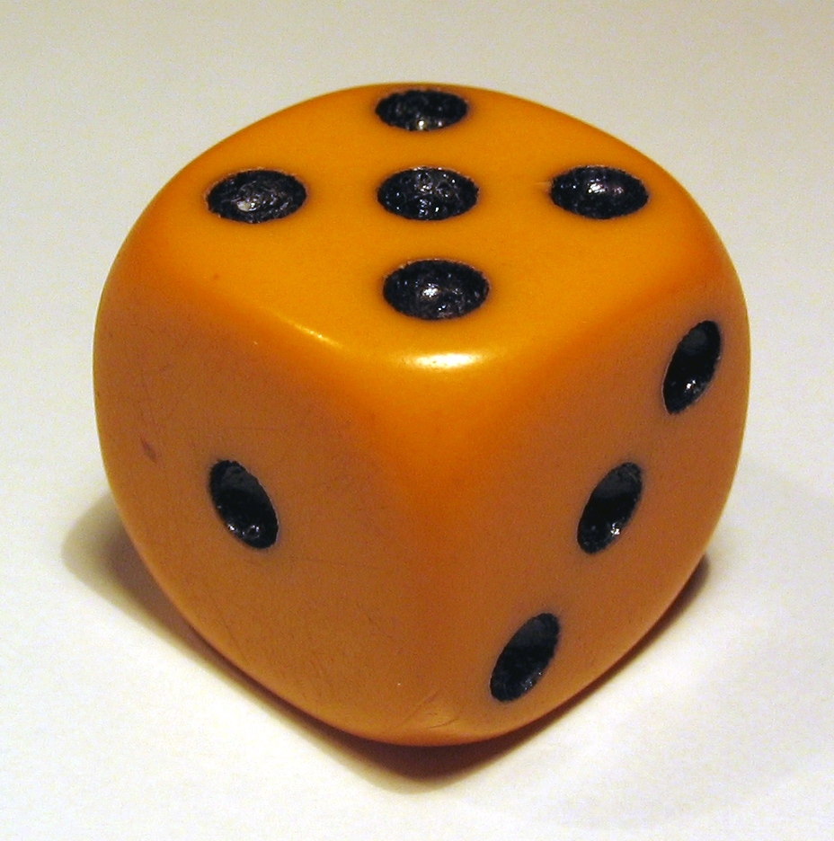
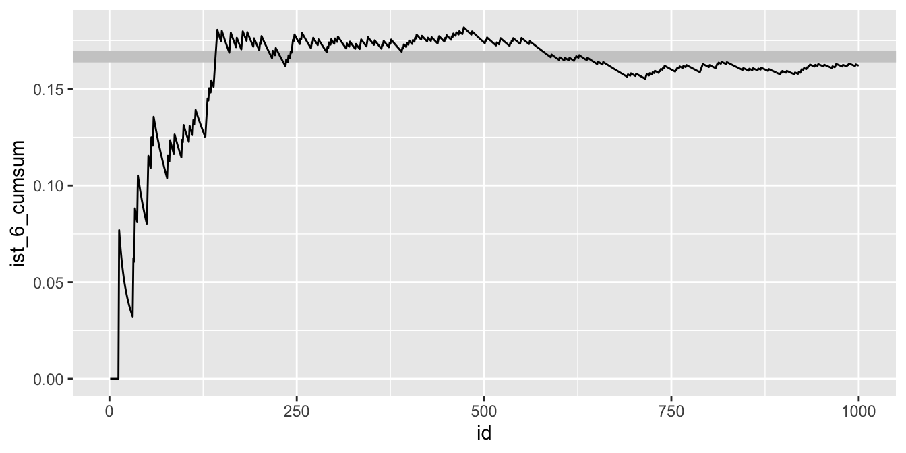
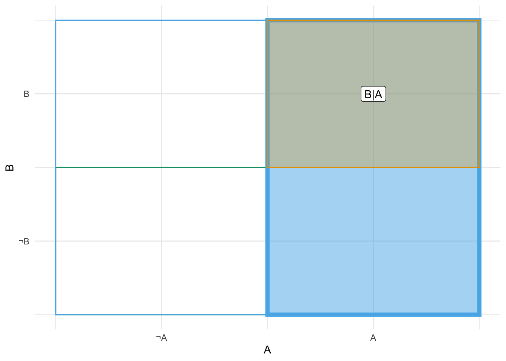
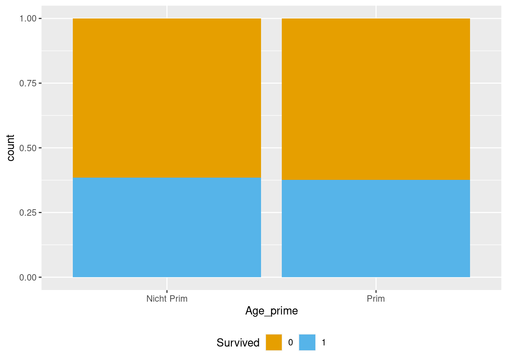
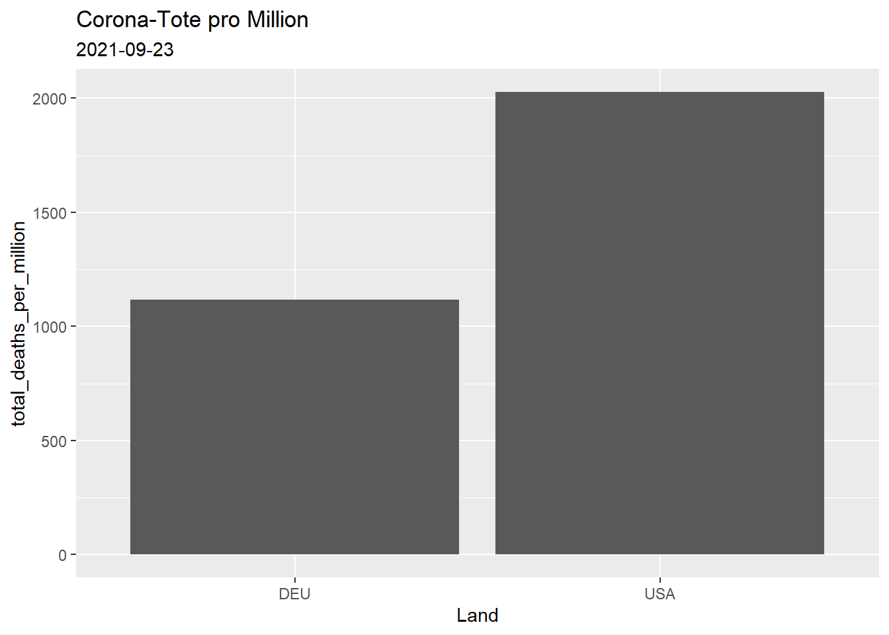
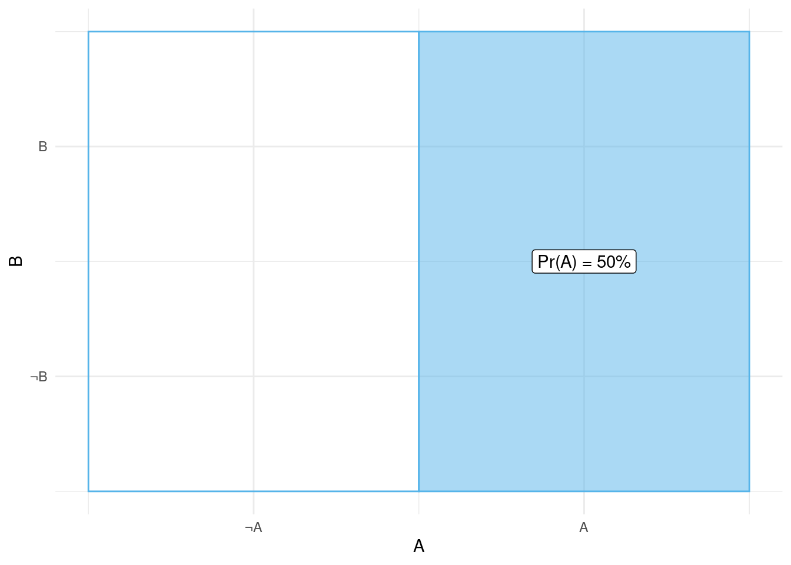
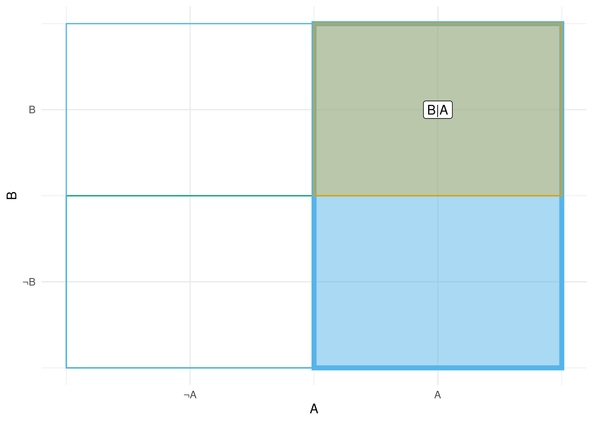

flowchart LR M[Sie werfen die Münze] --> T M --> N
3 Wahrscheinlichkeit
3.1 Lernsteuerung
3.1.1 Position im Modulverlauf
Abbildung fig-modulverlauf gibt einen Überblick zum aktuellen Standort im Modulverlauf.
3.1.2 Überblick
Dieses Kapitel hat die Wahrscheinlichkeitstheorie (synonym: Wahrscheinlichkeitsrechnung) bzw. das Konzept der Wahrscheinlichkeit zum Thema.1 Es geht sozusagen um die Mathematik des Zufalls.
3.1.3 Wozu brauche ich dieses Kapitel?
Im wirklichen Leben sind Aussagen (Behauptungen) so gut wie nie sicher.
- “Weil sie so schlau ist, ist sie erfolgreich.”
- “In Elektroautos liegt die Zukunft.”
- “Das klappt sicher, meine Meinung.”
- “Der nächste Präsident wird XYZ.”
Aussagen sind nur mehr oder weniger (graduell) sicher. Wir können die Regeln der Wahrscheinlichkeitslogik verwenden, um den Grad der Sicherheit (von ganz unsicher bis ganz sicher) zu präzisieren. Daher sagt man auch, Wahrscheinlichkeit sei die Logik der Wissenschaft (Jaynes 2014).
3.1.4 Lernziele
Nach Absolvieren des jeweiligen Kapitels sollen folgende Lernziele erreicht sein.
Sie können …
- die Grundbegriffe der Wahrscheinlichkeitsrechnung erläuternd definieren
- die drei Arten der direkten Ermittlung von Wahrscheinlichkeit erläutern
- typische Relationen (Operationen) von Ereignissen anhand von Beispielen veranschaulichen
- mit Wahrscheinlichkeiten rechnen
3.1.5 Begleitliteratur
Lesen Sie zur Begleitung dieses Kapitels Bourier (2018), Kap. 2-4.
3.1.6 Eigenstudium
Wichtig
Dieses Kapitel ist selbständig im Eigenstudium vorzubereiten vor dem Unterricht. Lesen Sie dazu die angegebene Literatur. Im Unterricht werden Fragen beantwortet und Aufgaben gemeinsam bearbeitet. Der Stoff wird aber nicht vorgestellt, sondern ist im Selbststudium vorab vorzubereiten.\(\square\)
3.1.7 Prüfungsrelevanter Stoff
Der Stoff dieses Kapitels deckt sich (weitgehend) mit Bourier (2018), Kap. 2-4. Weitere Übungsaufgaben finden Sie im dazugehörigen Übungsbuch, Bourier (2022).
Hinweis
In Ihrer Hochschul-Bibliothek kann das Buch als Ebook verfügbar sein. Prüfen Sie, ob Ihr Dozent Ihnen weitere Hilfen im geschützten Bereich (Moodle) eingestellt hat.\(\square\)
3.1.8 Zentrale Begriffe
3.1.8.1 Grundbegriffe
- Zufallsvorgang (Zufallsexperiment)
- Elementarereignis
- Ereignisraum
- Zufallsereignis (zufälliges Ereignis)
- Sicheres Ereignis
- Unmögliches Ereignis
3.1.8.2 Wahrscheinlichkeitsbegriffe
- Klassische Wahrscheinlichkeit (LaPlace’sche Wahrscheinlichkeit)
- Statistische (empirische) Wahrscheinlichkeitsermittlung
- Subjektive (Bayes) Wahrscheinlichkeitsermittlung
3.1.8.3 Wahrscheinlichkeitsrelationen
- Vereinigung von Ereignissen
- Schnitt(menge) von Ereignissen
- Komplementärereignis
- Vollständiges Ereignissystem
- Anforderungen an eine Definition von Wahrscheinlichkeit
3.1.8.4 Wahrscheinlichkeitsrechnung
- Allgemeiner Additionsssatz
- Disjunkte Ereignisse
- Additionssatz für disjunkte Ereignisse
- Bedingte Wahrscheinlichkeit
- (Stochastische) Unabhängigkeit
- Baumdiagramm für gemeinsame Wahrscheinlichkeit
- Allgemeiner Multiplikationssatz
- Multiplikationssatz für unabhängige Ereignisse
- Totale Wahrscheinlichkeit
- Satz von Bayes
3.1.9 Begleitvideos
3.2 Grundbegriffe
Beispiel 3.1 Klassisches Beispiel für einen Zufallsvorgang ist das (einmalige oder mehrmalige) Werfen einer Münze.\(\square\)
Werfen Sie eine Münze! Diese hier zum Beispiel:

Quelle: By OpenClipartVectors, CC0
Wiederholen Sie den Versuch 10 Mal.
Das reicht Ihnen nicht? Okay, wiederholen Sie den Versuch 100, nein 1000, nein: \(10^6\) Mal.
Notieren Sie als Ergebnis, wie oft die Seite mit der Zahl oben liegen kommt (“Treffer”).\(\square\)
Oder probieren Sie die App der Brown University, wenn Sie keine Sehnenscheidenentzündung bekommen wollen.
Definition 3.1 (Zufallsvorgang) Ein Zufallsvorgang oder Zufallsexperiment ist eine einigermaßen klar beschriebene Tätigkeit, deren Ergebnis nicht bekannt ist. Allerdings ist die Menge möglicher Ergebnisse sicher und die Wahrscheinlichkeit für die Ergebnisse kann quantifiziert werden.\(\square\)
Übungsaufgabe 3.1 Nennen Sie Beispiele für Zufallsvorgänge!2
Vorsicht
Zufall heißt nicht, dass ein Vorgang keine Ursachen hätte. So gehorcht der Fall einer Münze komplett den Gesetzen der Gravitation. Würden wir diese Gesetze und die Ausgangsbedingungen (Luftdruck, Fallhöhe, Oberflächenbeschaffenheit, Gewichtsverteilungen, …) exakt kennen, könnten wir theoretisch sehr genaue Vorhersagen machen. Der “Zufall” würde aus dem Münzwurf verschwinden. Man sollte “Zufall” also besser verstehen als “unbekannt”.\(\square\)
Übungsaufgabe 3.2 Mit dieser App können Sie Würfelwürfe simulieren und die Ausgänge dieses Zufallsexperiments beobachten.\(\square\)
Definition 3.2 (Ereignisraum) Die möglichen Ergebnisse eines Zufallvorgangs fasst man als Menge mit dem Namen Ereignisraum[leider gibt es eine Fülle synonymer Namen: Ereignisraum, Elementarereignisraum, Ergebnisraum oder Grundraum] zusammen. Man verwendet den griechischen Buchstaben \(\Omega\) für diese Menge. Die Elemente \(\omega\) (kleines Omega) von \(\Omega\) nennt man Ergebnisse.\(\square\)
Beispiel 3.2 Beobachtet man beim Würfelwurf (s. Abbildung fig-wuerfel) die oben liegende Augenzahl, so ist
\[\Omega = \{ 1,2,3,4,5,6 \} = \{⚀, ⚁, ⚂, ⚃, ⚄, ⚅\}\]
ein natürlicher Grundraum (Henze 2019).\(\square\)


Definition 3.3 (Ereignis) Jede Teilmenge3 von \(\Omega\) heißt Ereignis; \(A \subseteq B\) .\(\square\)
Beispiel 3.3 Beim Mensch-ärger-dich-nicht Spielen habe ich eine 6 geworfen.4 Das Nennen wir das Ereignis \(A\): “Augenzahl 6 liegt oben”.\(\square\)
\(A= \{6\}\)
Beispiel 3.4 Sie werfen eine Münze (Sie haben keinen Grund, an ihrer Fairness zu zweifeln). “Soll ich jetzt lernen für die Klausur (Kopf) oder lieber zur Party gehen (Zahl)?”
Abbildung fig-baummuenz1 zeigt die möglichen Ausgänge (T wie Treffer (Party) und N (Lernen)) dieses Zufallexperiments.
Zahl! Treffer! Glück gehabt!5\(\square\)
Definition 3.4 (Unmögliches und sicheres Ereignis) Die leere Menge \(\varnothing\) heißt das umögliche, der Grundraum \(\Omega\) heißt das sichere Ereignis. \(\square\)
Beispiel 3.5 (Unmögliches Ereignis) Alois behauptet, er habe mit seinem Würfel eine 7 geworfen. Schorsch ergänt, sein Würfel liege auf einer Ecke, so dass keine Augenzahl oben liegt. Draco hat seinen Würfel runtergeschluckt.\(\square\)
Beispiel 3.6 Nach dem der Würfel geworfen wurde, liegt eine Augenzahl zwischen 1 und 6 oben.\(\square\)
Definition 3.5 (Elementarereignis) Jede einelementige Teilmenge \(\{\omega\}\) von \(\Omega\) heißt Elementarereignis (häufig mit \(A\) bezeichnet).\(\square\)
Beispiel 3.7 (Elementarereignis)
Sie spielen Mensch-ärger-dich-nicht. Und brauchen dringend eine
6. Sie würfeln. Das Ereignis \(A = \{1\}\) tritt ein.6Sie schreiben eine Statistik-Klausur. Irgendwie haben Sie das Gefühl, das Ergebnis ist eine Zufallsexperiment… Jedenfalls können nach Adam Riese zwei Dinge passieren: \(\Omega= \{\text{bestehen, nicht bestehen}\}\). Das erste der beiden Elementarereignisse tritt ein. Yeah!
Sie führen eine Studie durch zur Wirksamkeit einer Lern-App. Es ist nicht klar, ob die App wirklich was bringt für den Lernerfolg. Vereinfacht gesprochen ist der Grundraum dieses Experiments: \(\Omega = \{\text{schadet, bringt nichts, nützt}\}\). Die Daten sprechen für das Ereignis \(A = \{\text{bringt nichts}\}\).
Definition 3.6 (Vollständiges Ereignissystem) Wird der Grundraum \(\Omega\) vollständig in paarweis disjunkte Ereignisse zerlegt, so bilden diese Ereignisse ein vollständiges Ereignissystem, s. Abbildung fig-vollereignis.\(\square\)

Beispiel 3.8 Sei \(\Omega\) der typische Ereignisraum des Würfelwurfs. Wir zerlegen den Grundraum in zwei Ereignisse, \(A\) “gerade Zahlen”, und \(B\) “ungerade Zahlen”. Damit haben wir ein vollständiges Ereignissystem erstellt.
\[\begin{align} A = \{2,4,6\} \qquad \hfill \boxed{\color{gray}{1}\; \boxed{\color{black}{2}}\; \color{gray}{3}\; \boxed{\color{black}{4}}\; \color{gray}{5}\; \boxed{\color{black}{6}}\;} \\ B = \{1,3,5\} \qquad \hfill \boxed{\boxed{\color{black}{1}}\; \color{gray}{2}\; \boxed{\color{black}{3}}\; \color{gray}{4}\; \boxed{\color{black}{5}}\; \color{gray}{6}\; } \\ \hline \\ \Omega = \{1,2,3,4,5,6\} \qquad \hfill \boxed{1\; 2\; 3\; 4\; 5\; 6 } \end{align}\]
Beispiel 3.9 Sei \(\Omega\) der typische Ereignisraum des Würfelwurfs. Wir zerlegen den Grundraum in zwei Ereignisse, \(A\) “1,2,3”, und \(B\) “4,5,6”. Damit haben wir ein vollständiges Ereignissystem erstellt.
\[\begin{align} A = \{1,2,3\} \qquad \qquad \hfill \boxed{\boxed{ \color{black}{1\; 2\; 3}}\; \color{gray}{4\; 5\; 6}} \\ B = \{4,5, 6\} \qquad \qquad \hfill \boxed{\color{gray}{1 \; 2 \; 3}\; \boxed{\color{black}{4\; 5 \; 6}}} \\ \newline \hline \\ \Omega = \{1,2,3,4,5,6\} \qquad \qquad \hfill \boxed{1\; 2\; 3\; 4\; 5\;6} \end{align}\]
Definition 3.7 (Mächtigkeit) Die Anzahl der Elementarereignisse eines Ereignismraums nennt man die Mächtigkeit (des Ereignisraums).7\(\square\)
Die Mächtigkeit von \(\Omega\) bezeichnet man mit dem Symbol \(|\Omega|\).
Beispiel 3.10 Beim Wurf eines Würfels mit \(\Omega=\{1,2,3,4,5,6\}\) gibt es 6 Elementarereignisse. Die Mächtigkeit ist also 6: \(|\Omega|=6\).\(\square\)
3.3 Direkte Ermittlung von Wahrscheinlichkeiten
3.3.1 Epistemologische Wahrscheinlichkeit
Vor uns liegt ein Würfel. Schlicht, ruhig, unbesonders. Wir haben keinen Grund anzunehmen, dass eine seiner \(n=6\) Seiten bevorzugt nach oben zu liegen kommt. Jedes der sechs Elementarereignisse ist uns gleich plausibel; der Würfel erscheint uns fair. In Ermangelung weiteres Wissens zu unserem Würfel gehen wir schlicht davon aus, dass jedes der \(n\) Elementarereignis gleich wahrscheinlich ist. Es gibt keinerlei Notwendigkeit, den Würfel in die Hand zu nehmen, um zu einer Wahrscheinlichkeitsaussage auf diesem Weg zu kommen. Natürlich könnten wir unsere Auffassung eines fairen Würfels testen, aber auch ohne das Testen können wir eine stringente Aussage (basierend auf unserer Annahme der Indifferenz der \(n\) Elementarereignisse) zur Wahrscheinlichkeit eines bestimmten (Elementar-)Ereignisses \(A\) kommen (Briggs 2016), s. Gleichung eq-briggs.
\[Pr(A) = 1/n= \frac{1}{|\Omega|} \tag{3.1}\]
Beispiel 3.11 Sei \(A\) = “Der Würfel wird beim nächsten Wurf eine 6 zeigen.” Die Wahrscheinlichkeit für \(A\) ist \(1/6. \square\)
Definition 3.8 Ein Zufallsexperiment, bei dem alle Elementarereignisse die selbe Wahrscheinlichkeit haben, nennt man man ein Laplace-Experiment.\(\square\)
In Erweiterung von Gleichung eq-briggs können wir schreiben:
\[Pr(A)=\frac{\text{Anzahl Treffer}}{\text{Anzahl möglicher Ergebnisse}}\]
3.3.2 Frequentistische Wahrscheinlichkeit
In Ermangelung einer Theorie zum Verhalten eines (uns) unbekannten Zufallsvorgangs und unter der Vermutung, dass die Elementarereignisse nicht gleichwahrscheinlich sind, bleibt uns ein einfacher (aber aufwändiger) Ausweg: Ausprobieren.
Angenommen, ein Statistik-Dozent, bekannt für seine Vorliebe zum Glücksspiel und scheinbar endlosen Glückssträhnen, er wirft andauernd eine 6, hat seinen Lieblingswürfel versehentlich liegen gelassen. Das ist die Gelegenheit! Sie greifen sich den Würfel, und … Ja, was jetzt? Nach kurzer Überlegung kommen Sie zum Entschluss, den Würfel einen “Praxistest” zu unterziehen: Sie werfen ihn 1000 Mal (Puh!) und zählen den Anteil der 6. Falls der Würfel fair ist, müsste gelten \(Pr(A=6)=1/6\approx .17\). Schauen wir mal!
Und hier der Anteil von 6 im Verlauf unserer Würfe, s. Abbildung fig-wuerfel.

Hm, leider ist auf den ersten Blick kein Anzeichen für Schummeln bzw. einen gezinkten Würfel zu finden (zumindest nicht zu Gunsten des Zwielichten Dozenten).
3.3.3 Subjektive Wahrscheinlichkeit
Um subjektiv zu einer Wahrscheinlichkeit zu kommen, sagt man einfach seine Meinung. Das hört sich natürlich total plump an. Und tatsächlich besteht die Gefahr, dass die so ermittelten Wahrscheinlichkeiten aus der Luft gegriffen, also haltlos, sind.
Allerdings kann diese Art von Wahrscheinlichkeitsermittlung auch sehr wertvoll sein. In komplizierten Situation im echten Leben kommt man oft in die Situation, dass weder die epistemologische noch die frequentistische Variante verwendet werden kann. Dann muss man auf Schätzungen, Vorwissen, Erfahrung, theoretischen Überlengungen etc. zurückgreifen.
3.4 Indirekte Ermittlung von Wahrscheinlichkeiten
Die indirekte Ermittlung von Wahrscheinlichkeiten meint das Ableiten von Wahrscheinlichkeitsaussagen, wenn man schon etwas über die Wahrscheinlichkeiten des Grundraums weiß. Dazu greift man auf Rechenregeln der Stochastik zurück. Das hört sich vielleicht wild an, ist aber oft ganz einfach.
Beispiel 3.12 (Gezinkter Würfel) Ein gezinkter Würfel hat eine erhöhte Wahrscheinlichkeit für das Ereignis \(A=\)“6 liegt oben”, und zwar gelte \(Pr(A)=1/3\). Was ist die Wahrscheinlichkeit, keine 6 zu würfeln?\(\square\)8
Für das Rechnen mit Wahrscheinlichkeiten ist es hilfreich, ein paar Werkzeuge zu kennen, die wir uns im Folgenden anschauen.
3.5 Relationen von Ereignissen
3.5.1 Überblick
Wir gehen von Grundraum \(\Omega\) aus, mit dem Ereignis \(A\) als Teilmenge: \(A \subset B\).
Da wir Ereignisse als Mengen auffassen, verwenden wir im Folgenden die beiden Begriffe synonym.
Dabei nutzen wir u.a. Venn-Diagramme. Venn-Diagramme eigenen sich, um typische Operationen (Relationen) auf Mengen zu visualisieren. Die folgenden Venn-Diagramme stammen von Wikipedia (En).
Wozu sind die Venn-Diagramme gut? Warum soll ich die lernen?
Venn-Diagramme zeigen Kreise und ihre überlappenden Teile; daraus lassen sich Rückschlüsse auf Rechenregeln für Wahrscheinlichkeiten ableiten. Viele Menschen tun sich leichter, Rechenregeln visuell aufzufassen als mit Formeln und Zahlen alleine. Aber entscheiden Sie selbst!\(\square\)
Die folgende App versinnbildlicht das Rechnen mit Relationen von Ereignissen anhand von Venn-Diagrammen.
3.5.2 Vereinigung von Ereignissen
Definition 3.9 (Vereinigung von Ereignissen) Vereinigt man zwei Ereignisse \(A\) und \(B\), dann besteht das neue Ereignis \(C\) genau aus den Elementarereignissen der vereinigten Ereignisse. Man schreibt \(C = A \cup B\), lies: “C ist A vereinigt mit B”.\(\square\)
Abbildung fig-cup zeigt ein Venn-Diagramm zur Verdeutlichung der Vereinigung von Ereignissen.

Beispiel 3.13 Um einen (hohen!) Geldpreis zu gewinnen, muss bei ihrem nächsten Wurf mindestens eines der beiden Ereignisse \(A\) oder \(B\) eintreten.
\[\begin{aligned} A = \{1,2\} \qquad \boxed{\boxed{1\; 2}\; \color{gray}{ 3\; 4\; 5\; 6}} \\ B = \{2,3\} \qquad \boxed{1\; \boxed{2\; 3}\; \color{gray}{ 4\; 5\; 6}} \\ \newline \hline \\ A \cup B = \{1,2,3\} \qquad \boxed{\boxed{1\; 2\; 3}\; \color{gray}{4\; 5\; 6}} \end{aligned}\]Zur besseren Verbildlichung betrachten Sie mal diese Animation zur Vereinigung von Mengen; Quelle.
In R heißt die Vereinigung von Mengen union(). Praktisch zum Ausprobieren:
3.5.3 (Durch-)Schnitt von Ereignissen
Definition 3.10 (Schnittmenge von Ereignissen) Die Schnittmenge zweier Ereignisse \(A\) und \(B\) umfasst genau die Elementarereignisse, die Teil beider Ereignisse sind. Man schreibt: \(A \cap B.\)9 Lies: “A geschnitten B”. \(\square\)
Abbildung fig-cap zeigt ein Sinnbild zur Schnittmenge zweier Ereignisse.

Beispiel 3.14 Um einen (hohen!) Geldpreis zu gewinnen, muss bei ihrem nächsten Wurf sowohl das Ereignis \(A\) = “gerade Augenzahl” als auch \(B\) = “Augenzahl größer 4”.
\[\begin{align} & A = \{2,4,6\} \qquad \hfill \boxed{\color{gray}{1}\; \boxed{\color{black}{2}}\; \color{gray}{3}\; \boxed{\color{black}{4}}\; \color{gray}{5}\; \boxed{\color{black}{6}}\;} \\ & B = \{5,6\} \qquad \qquad \hfill \boxed{ \color{gray}{1\; 2\; 3\; 4\;} \boxed{\color{black}{5\; 6}}} \\ \newline \hline \\ & A \cap B = \{6\} \qquad \qquad \hfill \boxed{\color{gray}{1\; 2\; 3\; 4\; 5\;} \color{black}{6}} \end{align}\]
Eselsbrücke zur Vereinigungs- und Schnittmenge
Das Zeichen für eine Vereinigung zweier Mengen kann man leicht mit dem Zeichen für einen Schnitt zweier Mengen leicht verwechseln; daher kommt eine Eselbrücke gelesen, s. Abbildung fig-esel.

3.5.4 Komplementärereignis
Definition 3.11 (Komplementärereignis) Ein Ereignis \(A\) ist genau dann ein Komplementärereignis zu \(B\), wenn es genau die Elementarereignisse von \(\Omega\) umfasst, die nicht Elementarereignis des anderen Ereignisses sind, s. Abbildung fig-neg.\(\square\)
Man schreibt für das Komplementärereignis von \(A\) oft \(\bar{A}\) oder \(\neg A\)10; lies “Nicht-A” oder “A-quer”.
Beispiel 3.15 Beim normalen Würfelwurf sei \(A\) das Ereignis “gerade Augenzahl”; das Komplementärereignis ist dann \(\neg A\) “ungerade Augenzahl”.
\[\begin{align} A = \{2,4,6\} \qquad \hfill \boxed{\color{gray}{1}\; \boxed{\color{black}{2}}\; \color{gray}{3}\; \boxed{\color{black}{4}}\; \color{gray}{5}\; \boxed{\color{black}{6}}\;} \\ \hline \\ \neg A = \{1,3,5\} \qquad \hfill \boxed{\boxed{\color{black}{1}}\; \color{gray}{2}\; \boxed{\color{black}{3}}\; \color{gray}{4}\; \boxed{\color{black}{5}}\; \color{gray}{6}\; } \\ \end{align}\]

3.5.5 Logische Differenz
Definition 3.12 (Logische Differenz) Die logische Differenz der Ereignisse \(A\) und \(B\) ist das Ereignis, das genau aus den Elementarereignissen besteht von \(A\) besteht, die nicht zugleich Elementarereignis von \(B\) sind, s. Abbildung fig-setminus.\(\square\)
Die logische Differenz von \(A\) zu \(B\) schreibt man häufig so: \(A \setminus B\); lies “A minus B”.

Beispiel 3.16 Sei \(A\) die Menge “große Zahlen” mit \(A = \{4,5,6 \}\). Sei \(B\) die Menge “gerade Zahlen”. Wir suchen die logische Differenz, \(A \setminus B\).
\[\begin{align} A = \{4,5, 6\} \qquad \hfill \boxed{4\; 5\; 6} \\ B = \{2,4,6\} \qquad \hfill \boxed{2\; 4\; 6} \\ \hline \\ A \setminus B \qquad \hfill \boxed{5} \end{align}\]
In R gibt es die Funktion setdiff(), die eine Mengendifferenz ausgibt.
🤯 Von der Menge \(A\) die Menge \(B\) abzuziehen, ist etwas anderes, als von \(B\) die Menge \(A\) abzuziehen:
setdiff(B, A)
## [1] 2
Vorsicht
\(A \setminus B \ne B \setminus A\).
3.5.6 Disjunkte Ereignisse
Seien \(A= \{1,2,3\}; B= \{4,5,6\}\).
\(A\) und \(B\) sind disjunkt11: ihre Schnittmenge ist leer: \(A \cap B = \emptyset\), s. Abbildung fig-disjunkt

Beispiel 3.17
Das Ereignis \(A\) “Gerade Augenzahl beim Würfelwurf”, \(A={2,4,6}\) und das Ereignis \(B\) “Ungerade Augenzahl beim Würfelwurf”, \(B={1,3,5}\) sind disjunkt.
Die Ereignisse “normaler Wochentag” und “Wochenende” sind disjunkt.\(\square\)
3.5.7 Vertiefung
3.6 Anforderungen an Wahrscheinlichkeiten
Wir richten eine Reihe von Forderungen an eine Definition von bzw. an das Rechnen mit Wahrscheinlichkeiten, die direkt plausibel erscheinen:12
- Nichtnegativität: Die Wahrscheinlichkeit eines Ereignisses kann nicht negativ sein.
- Normierung: Das sichere Ereignis hat die Wahrscheinlichkeit 1 bzw. 100%: \(Pr(\Omega)=1\); das unmögliche Ereignis hat die Wahrscheinlichkeit 0: \(Pr(\emptyset)=0\).
- Additivität. Sind \(A\) und \(B\) disjunkt, dann ist die Wahrscheinlichkeit von \(A\cup B\) die Summe der beiden Einzelwahrscheinlichkeiten von \(A\) und \(B\).
3.7 Rechnen mit Wahrscheinlichkeiten
3.7.1 Additionssatz
Der Additionssatz wird verwendet, wenn wir an der Wahrscheinlichkeit interessiert sind, dass mindestens eines der Ereignisse eintritt.
3.7.1.1 Disjunkte Ereignisse
Gegeben sei \(\Omega = {1,2,3,4,5,6}\). Als Sinnbild: \(\boxed{1\; 2\; 3\; 4\; 5\; 6}\).
Gesucht sei die Wahrscheinlichkeit des Ereignis \(A=\{1,2\}\).
\(\boxed{\boxed{1\; 2}\; \color{gray}{ 3\; 4\; 5\; 6}}\)
\(P(1 \cup 2) = \frac{1}{6} + \frac{1}{6} = \frac{2}{6}\)
Beispiel 3.18 Was ist die Wahrscheinlichkeit, an einem Samstag oder Sonntag geboren zu sein? Unter der (etwas vereinfachten) Annahme, dass alle Jahre zu gleichen Teilen aus allen Wochentagen bestehen, ist die Antwort \(Pr(A)=1/7 + 1/7 = 2/7\).\(\square\)
3.7.1.2 Allgemein (disjunkt oder nicht disjunkt)
Bei der Addition der Wahrscheinlichkeiten für \(A\) und \(B\) wird der Schnitt \(A\cap B\) doppelt erfasst.13 Er muss daher noch abgezogen werden.
Definition 3.13 (Allgemeiner Additionssatz) Die Wahrscheinlichkeit, dass mindestens eines der beiden Ereignisse \(A\) und \(B\) eintritt, ist gleich der Summe ihrer Wahrscheinlichkeiten minus ihrer gemeinsamen Wahrscheinlichkeit, s. Gleichung eq-add.
\[P(A \cup B) = P(A) + P(B) - P(A\cap B) \square \tag{3.2}\]
Beispiel 3.19 (Lernen und Klausur bestehen) In einem angewandten Psychologie-Studiengang sind die Studis verdonnert, zwei Statistik-Module (\(S1, S2\)) zu belegen. Die meisten bestehen (\(B\)), einige leider nicht (\(N\)), s. tbl-klausur2.
Ereignis \(A\) ist “Klausur Statistik 1” mit den Ergebnissen “bestanden” und “nicht bestanden”. Ereignis \(B\) ist analog für “Klausur Statistik 2”.
Wir suchen die Wahrscheinlichkeit, mindestens eine der beiden Klausuren zu bestehen: \(Pr(S_1B \cup S_2B)\). Nennen wir das Ereignise \(A\).
| . | S1_B | S1_NB | Summe |
|---|---|---|---|
| S2_B | 85 | 9 | 94 |
| S2_NB | 5 | 1 | 6 |
| Summe | 90 | 10 | 100 |
Die Wahrscheinlichkeit, mindestens eine der beiden Klausuren zu bestehen liegt bei 99%. Umgekehrt liegt die Wahrscheinlichkeit, keine der beiden Klausuren zu bestehen, liegt bei \(Pr(\neg A) = 1- Pr(A) = 0.01 = 1\%\); ein Sachverhalt, der sich auch mit einem kurzen Blick in die Datentabelle erkennen lässt.\(\square\)
3.7.2 Bedingte Wahrscheinlichkeit
Definition 3.14 (Bedingte Wahrscheinlichkeit) Die Bedingte Wahrscheinlichkeit ist die Wahrscheinlichkeit, dass \(A\) eintritt, gegeben dass \(B\) schon eingetreten ist. \(\square\)
Man schreibt: \(Pr(A|B).\) Lies: “A gegeben B” oder “A wenn B”.
Übungsaufgabe 3.3 Schauen Sie sich mal diese Wahnsinnsanimation von Victor Powell an zu bedingten Wahrscheinlichkeiten. Hammer!
Abbildung fig-schema-p illustriert gemeinsame Wahrscheinlichkeit, \(P(A \cap B)\), und bedingte Wahrscheinlichkeit, \(P(A|B)\).


Beispiel 3.20 (Bedingte Wahrscheinlichkeit) Sei \(A\) “Schönes Wetter” und \(B\) “Klausur steht an”. Dann meint \(Pr(A|B)\) die Wahrscheinlichkeit, dass das Wetter schön ist, wenn gerade eine Klausur ansteht.\(square\)
Beispiel 3.21 (Von Päpsten und Männern) Man(n) beachte, dass die Wahrscheinlichkeit, Papst \(P\) zu sein, wenn man Mann \(M\) ist etwas anderes ist, als die Wahrscheinlichkeit, Mann zu sein, wenn man Papst ist: \(Pr(P|M) \ne Pr(M|P)\). Das hört sich erst verwirrend an, aber wenn man darüber nachdenkt, wird es sehr plausibel.\(\square\)
Beispiel 3.22 (Kalt und Regen) Die Wahrscheinlichkeit, dass es kalt ist, wenn es regnet, ist gleich der Wahrscheinlichkeit, dass es gleichzeitig kalt ist und regnet geteilt durch die Wahrscheinlichkeit, dass es regnet.\(\square\)
Beispiel 3.23 Gustav Groß-Gütz verkauft eine Tinktur14, die schlau machen soll, “Gützis Gehirn Grütze”.15 Gustav trinkt die Grütze und sagt schlaue Dinge. Was schließen wir daraus? Sei \(H\) (wie Hypothese) “Gützis Grütze macht schlau”; sei \(D\) (wie Daten) die Beobachtung, dass Gustav schlaue Dinge gesagt hat. Ohne exakte Zahlen zu suchen, wie hoch ist wohl \(Pr(D|H)\)? In Worten: “Wie wahrscheinlich ist es, schlaue Dinge gesagt zu haben, wenn die Grütze wirklich schlau macht?”. Vermutlich ist diese Wahrscheinlichkeit sehr hoch. Aber wie hoch ist wohl \(Pr(H|D)\)? In Worten: “Wie wahrscheinlich ist es, dass die Grütze wirklich schlau macht, gegeben, dass wir gesehen hat, dass jemand etwas schlaues gesagt hat, nachdem er besagte Grütze getrunken hat?” Skeptische Geister werden der Meinung sein, \(Pr(H|D)\) ist gering. Das Beispiel zeigt u.a. \(Pr(H|D) \ne Pr(D|H).\square\)
Das Berechnen einer bedingten Wahrscheinlichkeit, \(Pr(A|B)\), ist vergleichbar zum Filtern einer Tabelle:
| id | A | B |
|---|---|---|
| 1 | 0 | 0 |
| 2 | 0 | 1 |
| 3 | 1 | 0 |
| 4 | 1 | 1 |
| SUMME | 2 | 2 |
Es ergeben sich folgende Wahrscheinlichkeiten:
\(P(A) = 2/4; P(B) = 2/4; P(A \cap B) = 1/4; P(A|B) = 1/2\)
3.7.2.1 Rechenregel
Die Wahrscheinlichkeit für \(A\), wenn \(B\) schon eingetreten ist, berechnet sich so, s. Gleichung eq-pr-cond.
\[Pr(A|B) = \frac{Pr(A \cap B)}{Pr(B)} \tag{3.3}\]
Beispiel 3.24 (Lernen und Klausur bestehen) Sie bereiten sich gerade auf die Klausur bei Prof. Süß vor. Das heißt: Sie überlegen, ob Sie sich auf die Klausur vorbereiten sollten. Vielleicht lohnt es sich ja gar nicht? Vielleicht ist die Wahrscheinlichkeit zu bestehen, wenn man nicht gelernt hat, sehr groß? Aber da Sie nun mal auf Fakten stehen, haben Sie sich nach einiger Recherche folgende Zahlen besorgen können, s. Tabelle tbl-klausur-lernen. In der Tabelle sind die Daten von 100 Studis ausgewiesen. Ein Teil hat sich vorbereitet, ordentlich gelernt, nenen wir sie die “Lerner. Ein anderer Teil hat nicht gelernt, \(NL\) bzw. \(\neg L\). Ein Teil hat bestanden, \(B\), ein Teil nicht \(NB\) oder \(\neg B\).
Wir suchen die Wahrscheinlichkeit, zu bestehen, wenn man nicht gelernt hat: \(Pr(B |\neg L)\).
| . | L | NL | Summe |
|---|---|---|---|
| B | 80 | 1 | 81 |
| NB | 5 | 14 | 19 |
| Summe | 85 | 15 | 100 |
Die Wahrscheinlichkeit, zu bestehen, wenn man nicht gelernt hat, liegt bei 1 von 15, also ca. 7%.\(\square\)
3.7.3 Stochastische (Un-)Abhängigkeit
Stochastische Unabhängigkeit ist ein Spezialfall von Abhängigkeit: Es gibt sehr viele Ausprägungen für Abhängigkeit, aber nur eine für Unabhängigkeit. Können wir Unabhängigkeit nachweisen, haben wir also eine starke Aussage getätigt.
Definition 3.15 (Stochastische Unabhängigkeit) Zwei Ereignisse sind (stochastisch) unabhängig voneinander, wenn die Wahrscheinlichkeit von \(A\) nicht davon abhängt, ob \(B\) der Fall ist, s. Gleichung eq-indep. Dann gilt:16
\[P(A|B) = P(A) = P(A|\neg B). \square \tag{3.4}\]
Die Unabhängigkeit von \(A\) und \(B\) wird manchmal so in Kurzschreibweise ausgedrückt: \(\perp \!\!\! \perp(A, B) \square\).
Beispiel 3.25 (Augenfarbe und Statistikliebe) Ich vermute, dass die Ereignisse \(A\), “Augenfarbe ist blau”, und \(B\), “Ich liebe Statistik”, voneinander unabhängig sind.\(\square\)17
Beispiel 3.26 (Überleben auf der Titanic) Abhängig, s. Abbildung fig-abh, links: Überleben auf der Titanic ist offenbar abhängig von der Passagierklasse. Auf der anderen Seite: Das Ereignis Überleben auf der Titanic ist unabhängig vom Ereignis Alter ist eine Primzahl, s. Abbildung fig-abh, rechts.\(\square\)


Zur Ab- bzw. Un-Abhängigkeit zweier Variablen, an Beispielen illustriert.
Beispiel 3.27 (Zusammenhang von Covidsterblichkeit und Impfquote) Sind die Ereignisse Tod durch Covid bzw. Impfquote (\(A\)) und Land18 (\(B\)) voneinander abhängig (Abbildung fig-covid1)?


Ja, die beiden Ereignisse sind abhägig, da in beiden Diagrammen gilt: \(P(A|B) \ne Pr(A) \ne Pr(A|\neg B)\).\(\square\)19
3.7.4 Multiplikationssatz
Gegeben seien die Ereignisse \(A\) und \(B\). Der Multiplikationssatz wird verwendet, wenn wir an der Wahrscheinlichkeit interessiert sind, dass beide Ereignisse \(A\) und \(B\) eintreten.
3.7.4.1 Unabhängige Ereignisse
Beispiel 3.28 Wir führen das Zufallsexperiment “Wurf einer fairen Münze” zwei Mal aus (Abbildung fig-zweimuenzen). Wie groß ist die Wahrscheinlichkeit, 2 Mal Kopf zu werfen? Dabei vereinbaren wir, dass “Kopf” als “Treffer” zählt (und “Zahl” als “Niete”).\(\square\)

Abbildung fig-zweimuenzen zeigt ein Baumdiagramm. Jeder Kasten (Knoten) zeigt ein Ergebnis. Die Pfeile (Kanten) symbolisieren die Abfolge des Experiments: Vom “Start” (schwarzer Kreis) führen zwei mögliche Ergebniss ab, jeweils mit Wahrscheinlichkeit 1/2. Die untersten Knoten nennt man auch Blätter (Endknoten), sie zeigen das Endresultat des (in diesem Fall) zweifachen Münzwurfs. Der Weg vom Start zu einem bestimmten Blatt nennt man Pfad. Die Anzahl der Pfade entspricht der Anzahl der Blätter. In diesen Diagramm gibt es vier Pfade (und Blätter).
Den Wurf der ersten Münze nennen wir in gewohnter Manier \(A\); den Wurf der zweiten Münze \(B\).
Die Wahrscheinlichkeiten der resultierenden Ereignisse finden sich in Tabelle tbl-muenz2.
| Ereignis | Pr |
|---|---|
| 0K | 1/2 * 1/2 = 1/4 |
| 1K | 1/4 + 1/4 = 1/2 |
| 2K | 1/2 * 1/2 = 1/4 |
Sei \(K_1\) das Ereignis, mit der 1. Münze Kopf zu werfen; sei \(K_2\) das Ereignis, mit der 2. Münze Kopf zu werfen-
Wir suchen \(Pr(K_1 \cap K_2)\). Aufgrund der stochastischen Unabhängigkeit der beiden Ereignisse gilt: \(Pr(K_1 \cap K_2) = Pr(K_1) \cdot Pr(K_2)\).
Pr_K1K2 <- 1/2 * 1/2
Pr_K1K2
## [1] 0.25Definition 3.16 (Multiplikationssatz für unabhängige Ereignisse) Die Wahrscheinlichkeit, dass zwei unabhängige Ereignisse \(A\) und \(B\) gemeinsam eintreten, ist gleich dem Produkt ihrer jeweiligen Wahrscheinlichkeiten, s. Gleichung eq-multtheorem.
\[Pr(A \cap B) = Pr(AB) = Pr(A) \cdot Pr(B) = Pr(B\cap A) = Pr(B) \cdot Pr(A)\square \tag{3.5}\]
Mit dieser App können Sie das Baumdiagramm für den zweifachen Münzwurf näher erkunden.
Wir führen das Zufallsexperiment “Wurf einer fairen Münze” drei Mal aus (Abbildung fig-dreimuenzen). Dabei vereinbaren wir wieder, dass “Kopf” (K) als “Treffer” gilt und “Zahl” (Z) als “Niete”.

Beim Wurf von “fairen” Münzen gehen wir davon aus, dass Kenntnis des Ergebnis des 1. Wurfes unsere Einschätzung des Ergebnis des 2. Wurfes nicht verändert etc. Anders gesagt: Wir gehen von (stochastischer) Unabhängigkeit aus.
Für z.B. das Ereignis \(A=\{ZZZ\}\) gilt: \(Pr(A) = 1/2 \cdot 1/2 \cdot 1/2 = (1/2)^3\). Da jeder Endknoten (jedes Blatt) gleichwahrscheinlich ist, ist die Wahrscheinlichkeit jeweils gleich.
Allgemeiner gilt: Für ein Zufallsexpriment, das aus \(k\) Wiederholungen besteht und in jeder Wiederholung die Wahrscheinlichkeit \(Pr(X)=p\) ist, so ist die Wahrscheinlichkeit für einen Endkonten \(Pr(X^k)=p^k\).
Da die Endknoten disjunkte Elementarereignisse sind, kann man ihre Wahrscheinlichkeit addieren, um zu anderen (zusammengesetzten) Ereignissen zu kommen, vgl. Tabelle tbl-baum3.
Abbildung fig-schema-p versinnbildlicht nicht nur die Bedingtheit zweier Ereignisse, sondern auch die (Un-)Abhängigkeit zweier Ereignisse, \(A\) und \(B\). In diesem Fall ist die Wahrscheinlichkeit von \(A\) gleich \(B\): \(Pr(A)=Pr(B)=.5\). Man sieht, dass die Wahrscheinlichkeit von \(A\) bzw. von \(B\) jeweils die Hälfte der Fläche (der Gesamtfläche, d.h von \(Pr(\Omega)=1\)) ausmacht. Die Schnittmenge der Fläche von \(A\) und \(B\) entspricht einem Viertel der Fläche: \(Pr(AB) = Pr(A) \cdot Pr(B) = 50\% \cdot 50\% = 25\%.\) In diesem Fall sind \(A\) und \(B\) unabhängig.



Abbildung fig-unabh-e zeigt weiterhin, dass gilt: \(P(A\cap B) = P(A) \cdot P(B) = P(B) \cdot P(A)\).
Beispiel 3.29 (Kalt und Regen) Von McElreath (2020) stammt diese Verdeutlichung der gemeinsamen Wahrscheinlichkeit:
Was ist die Wahrscheinlichkeit für kalt ❄ und Regen ⛈️?
Die Wahrscheinlichkeit für kalt und Regen ist die Wahrscheinlichkeit von Regen ⛈, wenn’s kalt ❄ ist mal die Wahrscheinlichkeit von Kälte ❄.
Ebenfalls gilt:
Die Wahrscheinlichkeit für kalt und Regen ist die Wahrscheinlichkeit von Kälte ❄, wenn’s regnet ⛈️ mal die Wahrscheinlichkeit von Regen ⛈️.
Das Gesagte als Emoji-Gleichung:
\(P(❄️ \text{ und } ⛈️) = P(⛈️ |❄️ ) \cdot P(❄️) = P(❄️ |⛈️ ) \cdot P(⛈️) = P(⛈ \text{ und } ❄️)\) Man kann also die “Gleichung drehen”.20\(\square\)
Definition 3.17 (Kettenregel) Allgemein gesagt, spricht man von der Kettenregel der Wahrscheinlichkeitsrechnung, s. Gleichung eq-kette.
\[P(A\cap B) = P(A) \cdot P(B|A) = P(B) \cdot P(A|B)\square \tag{3.6}\]
In Worten: Die Wahrscheinlichkeit von \(A\) gegeben \(B\) ist gleich der Wahrscheinlichkeit von \(A\) mal der Wahrscheinlichkeit von \(B\) gegeben \(A\).
3.7.4.2 Abhängige Ereignisse
Ein Baumdiagramm bietet sich zur Visualisierung abhängiger Ereignisse an, s. Abbildung fig-baum-abh. Für unabhängige Ereignisse übrigens auch.
Beispiel 3.30 In einer Urne befinden sich fünf Kugeln, von denen vier rot sind und eine blau ist.
wie groß ist die Wahrscheinlichkeit, dass bei zwei Ziehungen ohne Zurücklegen (ZOZ) zwei rote Kugeln gezogen werden (Bourier 2018), S. 47.
Hier ist unsere Urne:
\[\boxed{\color{red}{R, R, R, R}, \color{blue}B}\]
Und jetzt ziehen wir. Hier ist das Baumdiagramm, s. Abbildung fig-baum-abh.
flowchart LR A[Start] -->|4/5|B[1. Zug: R] A -->|1/5|C[1. Zug: B] B -->|3/4|D[2. Zug: R] B -->|1/4|E[2. Zug: B] D --- H[Fazit: RR: 12/20] E --- I[Fazit: RB: 4/20] C -->|4/4|F[2. Zug: R] C -->|0/4|G[2. Zug: B] F --- J[Fazit: BR: 4/20] G --- K[Fazit: BB: 0/20]
Es gilt also: \(P(A\cap B) = P(A) \cdot P(B|A) \square\).
Beispiel 3.31 (Bertie Botts Bohnen jeder Geschmacksrichtung)
Sei bloß vorsichtig mit denen. Wenn sie sagen jede Geschmacksrichtung, dann meinen sie es auch - Du kriegst zwar alle gewöhnlichen wie Schokolade und Pfefferminz und Erdbeere, aber auch Spinat und Leber und Kutteln. George meint, er habe mal eine mit Popelgeschmack gehabt.“
— Ron Weasley zu Harry Potter21
In einem Beutel liegen \(n=20\) Bertie Botts Bohnen jeder Geschmacksrichtung. Uns wurde verraten, dass fast alle gut schmecken, also z.B. nach Schokolade, Pfefferminz oder Marmelade. Leider gibt es aber auch \(x=3\) furchtbar scheußliche Bohnen (Ohrenschmalz-Geschmacksrichtung oder Schlimmeres). Sie haben sich nun bereit erklärt, \(k=3\) Bohnen zu ziehen. Und zu essen, und zwar direkt und sofort! Also, jetzt heißt es tapfer sein. Ziehen und runter damit!
Wie groß ist die Wahrscheinlichkeit, genau eine scheußliche Bohne zu erwischen?
Es gibt drei Pfade für 1 Treffer bei 3 Wiederholungen:
Pfad1 <- 3/20 * 17/19 * 16/18
Pfad2 <- 17/20 * 3/19 * 16/18
Pfad3 <- 17/20 * 16/19 * 3/18
Gesamt_Pr <- Pfad1 + Pfad2 + Pfad3
Gesamt_Pr
## [1] 0.3578947Nutzen Sie diese App, um das auszuprobieren. Sie müssen in der App noch die Zahl der Bohnen (\(n\)) und die Zahl der scheußlichen Bohnen (\(x\)) einstellen.\(\square\)
3.7.5 Baumdiagramm sucht Problem
Überlegen Sie sich eine Problemstellung (Aufgabenstellung), die mit folgender Baumdiagramm-App gelöst werden kann.\(\square\)
3.7.6 Totale Wahrscheinlichkeit
Abbildung fig-tot-wskt zeigt das Baumdiagramm für die Aufgabe Bourier (2018), S. 56.
flowchart LR A[Start] -->|0.6|B[A1] A -->|0.1|C[A2] A -->|0.3|D[A3] B -->|0.05|E[B] B -.->|0.95|F[Nicht-B] C -->|0.02|G[B] C -.->|0.98|H[Nicht-B] D -->|0.04|I[B] D -.->|0.96|J[Nicht-B]
Gesucht ist die Wahrscheinlichkeit \(P(B)\); \(A\) ist ein vollständiges Ereignissystem.
Dazu addieren wir die Wahrscheinlichkeiten der relevanten Äste. Jeder Ast stellt wiederum das gemeinsame Auftreten der Ereignisse \(A_i\) und \(B\) dar.
W_Ast1 <- 0.6 * 0.05 # Wahrscheinlichkeit für Ast 1
W_Ast2 <- 0.1 * 0.02 # ... Ast 2
W_Ast3 <- 0.3 * 0.04 # ... Ast 3
W_total <- W_Ast1 + W_Ast2 + W_Ast3 # totale W.
W_total
## [1] 0.044Die totale Wahrscheinlichkeit beträgt in diesem Beispiel also \(P(B) = 4.4\%\).22
Definition 3.18 (Totale Wahrscheinlichkeit) Bilden die Ereignisse \(A_1, A_2, ..., A_n\) ein vollständiges Ereignissystem und ist \(B\) ein beliebiges Ereignis dann gilt \(Pr(B) = \sum_{i=1}^n Pr(A_i) \cdot Pr(B|A_i).\square\)
In Abbildung fig-tot-wskt gilt \(Pr(B) = 0.6 \cdot 0.05 + 0.1 \cdot 0.02 + 0.3 \cdot 0.04 = 0.03 + 0.002 + 0.012 = 0.04.\square\)
Übungsaufgabe 3.4 (Bertie Botts Bohnen jeder Geschmacksrichtung, Teil 2) Es ist die gleich Aufgabe wie Beispiel exm-bertie-botts, aber jetzt lautet die Frage: Wie groß ist die Wahrscheinlichkeit, mindestens eine scheußliche Bohne zu erwischen?23
\(\square\)
3.7.7 Baumsammlung
Baumdiagramme sind ein hilfreiches Werkzeug für wiederholte Zufallsexperimente. Daher ist hier eine “Baumsammlung”24 zusammengestellt, s. fig-baumsammlung.
- Sie werfen 1 Münze, Abbildung fig-baummuenz1.
- Sie werfen 2 Münzen, Abbildung fig-zweimuenzen.
- Sie werfen 3 Münzen, Abbildung fig-dreimuenzen.
- Sie werfen 4 Münzen, Abbildung fig-4muenzen.
- Sie werfen 9 Münzen, 🤯 Abbildung fig-binom2.
3.8 Bayes’ Theorem
3.8.1 Wozu wird Bayes in der Praxis genutzt?
In der Praxis nutzt man Bayes häufig, wenn man Daten zu einer Wirkung \(W\) hat, und auf die Ursache \(U\) zurückschließen möchte, sinngemäß:
\[W \quad \underrightarrow{Bayes} \quad U\]
Dann kann man Gleichung eq-bayes1 so schreiben, s. Gleichung eq-bayes2:
\[P(U|W) = \frac{ P(U) \cdot P(W|U) }{P(W)} \tag{3.7}\]
Eine ähnliche Situation, die in der Praxis häufig ist, dass man Daten \(D\) hat und auf die Wahrscheinlichkeit einer Hypothese \(H\) schließen möchte, s. Gleichung eq-bayes3.
\[D \quad \underrightarrow{Bayes} \quad H\]
\[P(H|D) = \frac{ P(H) \cdot P(D|H) }{P(D)} \tag{3.8}\]
Gleichung eq-bayes3 fragt nach \(P(H|D)\):
Was ist die Wahrscheinlichkeit der Hypothese H, jetzt wo wir die Daten haben (und ein Modell?)
Und antwortet so (Gleichung eq-bayes3):
Diese Wahrscheinlichkeit entspricht der Grundrate (Apriori-Wahrscheinlichkeit) der Hypothese mal der Plausibilität (Likelihood) der Daten unter Annahme (gegeben) der Hypothese. Aus Standardisierungsgründen dividiert man noch die totale Wahrscheinlichkeit der Daten über alle Hypothesen.
3.8.2 Bayes als Baum
Gesucht sei \(P(A_1|B)\).
Für Bayes’ Formel25 setzt man die Wahrscheinlichkeit des günstigen Ast zur Wahrscheinlichkeit aller relevanten Äste, \(P(B)\).
Beispiel 3.32 (Maschine produziert Ausschuss) Die drei Maschinen \(M_1, M_2, M_3\) produzieren den gleichen Artikel. Ihr jeweiliger Anteil, an der Produktion liegt bei 60%, 10% bzw. 30%. Die jeweilige Ausschussquote liegt bei 5, 2, bzw. 4%, s. Abbildung fig-tot-wskt2. Aufgabe: Wie groß ist die Wahrscheinlichkeit, dass ein defektes Teil von Maschine 1 produziert wurde?\(\square\)
Der günstige (gesuchte) Ast ist hier schwarz gedruckt, die übrigen Äste gestrichelt, s. Abbildung fig-tot-wskt2. \(A_i\) zeigt das Ereignis, dass der Artikel von Maschine \(i\) produziert wurde. \(B\) ist das Ereignis “Artikel ist Ausschuss”.
flowchart LR A[Start] -->|0.6|B[A1] A -.->|0.1|C[A2] A -.->|0.3|D[A3] B --->|0.05|E[B] B -.->|0.95|F[Nicht-B] C -.->|0.02|G[B] C -.->|0.98|H[Nicht-B] D -.->|0.04|I[B] D -.->|0.96|J[Nicht-B]
\[P(A|B) = \frac{P(A1 \cap B)}{P(B)} = \frac{0.6 \cdot 0.05}{0.03 + 0.002 + 0.012} = \frac{0.03}{0.044} \approx 0.68\]
\(P(A|B)\) beträgt also ca. 68%.
Zur Erinnerung: \(P(B)\) ist die totale Wahrscheinlichkeit.
3.8.3 Bayes als bedingte Wahrscheinlichkeit
Bayes’ Theorem ist auch nur eine normale bedingte Wahrscheinlichkeit:
\(P(A|B) = \frac{\overbrace{ P(A\cap B)}^\text{umformen}}{P(B)}\)
\(P(A| B)\) kann man umformen, s. Gleichung eq-bayes1:
\[P(A|B) =\frac{P(A\cap B)}{P(B)} = \frac{P(B|A) \cdot P(A)}{P(B)} \tag{3.9}\]
Man kann sich Bayes’ Theorem auch wie folgt herleiten:
\(P(A\cap B) = P(B \cap A) = P(A) \cdot P(B|A) = P(B) \cdot P(A|B)\)
Dann lösen wir nach P\((A|B)\) auf:
\(P(A|B) = \frac{P(A) \cdot P(B|A)}{P(B)}\)
3.8.4 Zusammengesetzte Hypothesen
Das ist vielleicht ein bisschen fancy, aber man kann Bayes’ Theorem auch nutzen, um die Wahrscheinlichkeit einer zusammengesetzten Hypothese zu berechnen: \(H = H_1 \cap H_2\). Ein Beispiel wäre: “Was ist die Wahrscheinlichkeit, dass es Regen (\(R\)) und Blitzeis (\(B\)) gibt, wenn es kalt (\(K\)) ist?”.
Das sieht dann so aus, Gleichung eq-bayes4:
\[ \begin{aligned} P(R \cap B |K) &= \frac{ P(R \cap B) \cdot P(K|R \cap B) }{P(D)} \\ &= \frac{ P(R ) \cdot P(B) \cdot P(K|R \cap B) }{P(D)} \end{aligned} \tag{3.10}\]
Hier haben wir \(P(R \cap B)\) aufgelöst in \(P(R) \cdot P(B)\), das ist nur zulässig, wenn \(R\) und \(B\) unabhängig sind.
3.9 Vertiefung
Bei Henze (2019) findet sich eine anspruchsvollere Einführung in das Rechnen mit Wahrscheinlichkeit; dieses Kapitel behandelt ein Teil des Stoffes der Kapitel 2 und 3 von Henze (2019).
Mit dieser App, die ein zweistufiges Baumdiagramm zeigt, können Sie das Verhalten von verschiedenen Arten von Wahrscheinlichkeiten weiter untersuchen.
Diese App lässt dich herausfinden, ob man wirklich krank ist, wenn der Arzt es bheauptet.
Das Video zu Bayes von 3b1b verdeutlicht das Vorgehen der Bayes-Methode auf einfache und anschauliche Weise.
Mittag und Schüller (2020) stellen in Kap. 11 die Grundlagen der Wahrscheinlichkeitstheorie vor. Ähnliche Darstellungen finden sich in einer großen Zahl an Lehrbüchern.
3.10 Aufgaben
Bearbeiten Sie die Aufgabe in der angegeben Literatur.
3.11 —

Bourier, Günther. 2018. Wahrscheinlichkeitsrechnung Und Schließende Statistik: Praxisorientierte Einführung: Mit Aufgaben Und Lösungen. 9., aktualisierte Auflage. Lehrbuch. Wiesbaden [Heidelberg]: Springer Gabler. https://doi.org/10.1007/978-3-658-07481-4.
———. 2022. Statistik-Übungen: Beschreibende Statistik – Wahrscheinlichkeitsrechnung – Schließende Statistik. 7. Auflage. Wiesbaden: Springer Gabler.
Briggs, William M. 2016. Uncertainty: The Soul of Modeling, Probability & Statistics. Springer.
Henze, Norbert. 2019. Stochastik: Eine Einführung mit Grundzügen der Maßtheorie: Inkl. zahlreicher Erklärvideos. Berlin, Heidelberg: Springer Berlin Heidelberg. https://doi.org/10.1007/978-3-662-59563-3.
Jaynes, E. T. 2014. Probability Theory: The Logic of Science. 1. https://doi.org/10.1007/s13398-014-0173-7.2.
McElreath, Richard. 2020. Statistical Rethinking: A Bayesian Course with Examples in R and Stan. 2. Aufl. CRC Texts in Statistical Science. Boca Raton: Taylor and Francis, CRC Press.
Mittag, Hans-Joachim, und Katharina Schüller. 2020. Statistik: Eine Einführung mit interaktiven Elementen. Berlin, Heidelberg: Springer Berlin Heidelberg. https://doi.org/10.1007/978-3-662-61912-4.